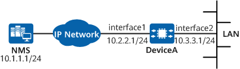

Example for Configuring RMON
Networking Requirements
On the network shown in Figure 1, the subnet connected to 10GE0/0/2 of DeviceA needs to be monitored. This includes:
Collecting real-time and historical statistics about specific traffic and various packets.
Monitoring broadcast and multicast traffic on the subnet and enabling the alarm function for the total number of broadcast and multicast packets. When the total number of such packets exceeds the configured threshold, the system proactively reports alarm information to the NMS.

In this example, interface1 and interface2 represent 10GE0/0/1 and 10GE0/0/2, respectively.

To complete the configuration, you need the following data:
Configuration Roadmap
The configuration roadmap is as follows:
Ensure that there are reachable routes between the device and NMS.
Configure SNMP and usernames and ensure that the device can send trap messages to the NMS.
Configure the RMON statistics function and collect traffic statistics on interfaces.
Configure the RMON alarm function so that a trap message is sent to the NMS when the sampling value exceeds the set threshold.
Procedure
- Configure reachable routes between the device and NMS. For details, see Configuration Scripts.
- Configure the device to send trap messages to the NMS.
# Enable SNMP to send trap messages to the NMS.
<HUAWEI> system-view [HUAWEI] sysname DeviceA [DeviceA] snmp-agent [DeviceA] snmp-agent trap enable
# Configure the device to send trap messages to the specified NMS.
[DeviceA] snmp-agent target-host trap address udp-domain 10.1.1.1 params securityname nms2-admin v3 privacy
- Configure the RMON statistics function.
# Enable the RMON statistics function.
[DeviceA] interface 10ge 0/0/2 [DeviceA-10GE0/0/2] rmon-statistics enable
# Configure the Ethernet statistics function.
[DeviceA-10GE0/0/2] rmon statistics 1 owner userA
# Configure the historical traffic sampling function to sample the traffic on the subnet at an interval of 30 seconds and save the 10 most recent historical entries.
[DeviceA-10GE0/0/2] rmon history 1 buckets 10 interval 30 owner userA [DeviceA-10GE0/0/2] quit
- Configure the RMON alarm function.
# Configure the device to send trap messages to the NMS when RMON event 1 occurs.
[DeviceA] rmon event 1 description alarmofinterface trap nms2-admin owner userA
# Set a sampling interval and thresholds for triggering event 1.
[DeviceA] rmon alarm 1 1.3.6.1.2.1.16.1.1.1.5.1 5 absolute rising-threshold 1000 1 falling-threshold 100 1 owner userA [DeviceA] quit
Verifying the Configuration
# Check data traffic information on the subnet.
<DeviceA> display rmon statistics 10ge 0/0/2 Statistics entry 1 owned by userA is valid. Interface :10GE0/0/2<ifEntry.402653698> Received : Octets :4294966296, Packets:316091 Broadcast packets :311839 , Multicast packets:666 Undersize packets :0 , Oversize packets :0 Fragments packets :0 , Jabbers packets :0 CRC alignment errors:0 , Collisions :0 Dropped packets (insufficient resources):0 Packets received according to length (octets): 64 :0 , 65-127 :0 , 128-255 :0 256-511:0 , 512-1023:0 , 1024-1518:0
# Check historical sampling records.
<DeviceA> display rmon history 10ge 0/0/2 History control entry 1 owned by userA is valid Sampled interface : 10GE0/0/2<ifEntry.402653698> Sampling interval : 30(sec) with 10 buckets max Last Sampling time : 0days 05h:17m:26s.30th Latest sampled values : Octets :1000 , Packets :100 Broadcast packets :100 , Multicast packets :100 Undersize packets :0 , Oversize packets :0 Fragments packets :0 , Jabbers packets :0 CRC alignment errors :0 , Collisions :0 Dropped packet :0 , Utilization :0 History record: Record No.1 (Sample time: 0days 05h:13m:56s.56th) Octets :1000 , Packets :100 Broadcast packets :100 , Multicast packets :100 Undersize packets :0 , Oversize packets :0 Fragments packets :0 , Jabbers packets :0 CRC alignment errors :0 , Collisions :0 Dropped packets :0 , Utilization :0
# Check RMON event information.
<DeviceA> display rmon event Event table 1 owned by userA is valid. Description: alarmofinterface. Will cause snmp-trap when triggered, last triggered at 1days 04h:00m:00s.04th
# Check RMON alarm configurations.
<DeviceA> display rmon alarm 1 Alarm table 1 owned by userA is valid. Samples absolute value : 1.3.6.1.2.1.16.1.1.1.5.1 Sampling interval : 5(sec) Rising threshold : 1000(linked with event 1) Falling threshold : 100(linked with event 1) When startup enables : risingOrFallingAlarm Latest value : 1500
Configuration Scripts
# sysname DeviceA # interface 10GE0/0/1 ip address 10.2.2.1 255.255.255.0 # interface 10GE0/0/2 ip address 10.3.3.1 255.255.255.0 rmon-statistics enable rmon statistics 1 owner userA rmon history 1 buckets 10 interval 30 owner userA # ip route-static 10.1.1.0 255.255.255.0 10.2.2.2 # snmp-agent # snmp-agent target-host trap address udp-domain 10.1.1.1 params securityname nms2-admin v3 privacy # rmon event 1 description alarmofinterface trap nms2-admin owner userA rmon alarm 1 1.3.6.1.2.1.16.1.1.1.5.1 5 absolute rising-threshold 1000 1 falling-threshold 100 1 owner userA # return